| Last updated: Exalt Version 5.13.0.0 (June 2025) |
|---|
| 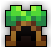 |
| Dust Drops | ||
|---|---|---|
| 24-32 |
0 |
0 |
The Magic Woods is a low to medium-level dungeon that is home to a very large variety of fairy enemies.
The dungeon is a source of Potions of Speed and Dexterity, low-to-mid level gear, the Fairy Dust consumable, untiered Shield of Flowing Clarity, the low-level Spirit Mystic UT set, the entire Horticultural Huntress ST set, it is also another location where the Tarot Card Pack can be found to get a chance to obtain any of the Tarot Card Artifacts, and a unique pet skin.
Portal to the Magic Woods has a chance to drop from Pumpkin Brute, Evergreen Sprite, Ocean Spirit, Elder Sprite Tree and Ent God. It is also guaranteed to drop from Ent Ancient.
This dungeon must be completed to earn ‘Travel of the Decade‘, ‘King of the Mountains‘, ‘Hero of the Nexus’ and ‘Realm of the Mad God’ fame bonuses.
“Many years ago, a legendary guild existed that stood far above the rest. It consisted of only the strongest and most powerful heroes to ever grace the realm. To this day, their names go down in history and it is commonplace for younger adventurers to adopt their titles. Their namesakes are what many know as the “default names.” This mighty band of travelers eventually died off, but not without leaving behind a legacy and a trace of their collective power.
In a small and remote glade at the far reaches of the realm, every one of them agreed to transform their remaining life essence into a forest spirit, otherwise known as fairies. The woods have gone undisturbed for years, but due to the lack of an independent consciousness, the fairies have forgotten their purpose and consider anyone a trespasser. None of them will go down without a fight, but the source of their strength may also lie somewhere in the forest.”
- Original Description
| The Realm Eye says: |
|---|

A legendary guild once congregated at the heart of the Magic Woods in the pursuit of eternal life. To preserve their spirits, they collectively gave their lives in the pure waters of a great spring. Each member lives on as a fairy, but the lack of an independent consciousness has since caused them to forget their purpose. |
The Magic Woods Key is available in the Nexus for 50  .
.
See the Magic Woods Guide for a complete walk-through on the dungeon and all its enemies.
The dungeon consists of a series of rooms linked by dirt pathways, set in the middle of a dense forest. Each room is a randomly chosen premade setpiece, but the layout is procedurally generated. Rooms have floor tiles made of leaves, with the occasional flower. Most of the area is occupied by an impassable network of rocks, flowers, trees, and bushes. Enchanted Fountain Water appears in certain rooms and will provide  Healing for players who stand in it. The boss room is a fairly large, square arena with five pools of Enchanted Fountain Water lined with purple brick tiles. The central pool contains a fountain, where the Fountain Spirit boss resides.
Healing for players who stand in it. The boss room is a fairly large, square arena with five pools of Enchanted Fountain Water lined with purple brick tiles. The central pool contains a fountain, where the Fountain Spirit boss resides.
| 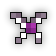 Deyst |
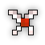 Eango |
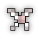 Eati |
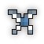 Ehoni |
| 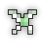 Iawa |
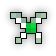 Laen |
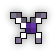 Odaru |
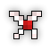 Rilr |
| 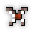 Risrr |
SayIt |
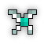 Scheev |
 Tiar |
| 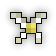 Vorck |
 Yangu |
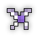 Yimi |
| 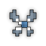 Darq |
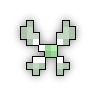 Eashy |
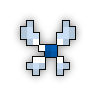 Eendi |
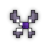 Idrae |
| 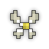 Iri |
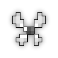 Itani |
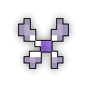 Oalei |
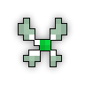 Oeti |
| 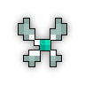 Oshyu |
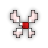 Queq |
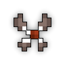 Rayr |
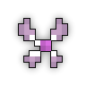 Urake |
| 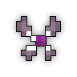 Utanu |
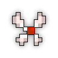 Vorv |
The Fountain Spirit is the boss of the Magic Woods. The battle against her can be initiated by attacking the fountain in the middle of the boss room.
The Magic Woods is part of the Standard and Mighty Quest pool from the Tinkerer and has five associated quests, including a scout quest.
| Name | Description | Items Needed | Reward |
|---|---|---|---|
| Scout the Woods | Scout the Magic Woods and report back here! |  |
  |
| The Fountain Spirit | Defeat the Fountain Spirit in the Magic Woods. | |
 |
| Blessings and Curses | Life is all about balance, wouldn’t you agree? |  |
|
| That’s the Spirit | All sorts of ghouls lurk in the realm, some more frightening than others! |    |
|
| Arboreal Adventurer | Eradicate The Heart of the Wetlands, the Fountain Spirit and the Murderous Megamoth! | 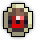 |
  |
The dungeon was released for Easter 2018 (March 29, 2018) for Patch X.24.0.0 (Mar 2018). Its production was lead by Toastrz and its art from Poshun, Atrapper & Beige, with special thanks given to Kiddforce.
Before Exalt Version 5.11.0.0 (May 2025), dungeon completion gave 11-25  with 60% chance.
with 60% chance.
Before Exalt Version 5.12.0.0 (June 2025), dungeon completion gave 22-30  .
.
All of the enemies are named after the default character names for new players, which coincides with the lore given for the Dungeon.
A scepter-shaped room can occasionally be found, which is a reference to the Honey Scepter (both were made by the same person, and the scepter has been turned into a meme of sorts).
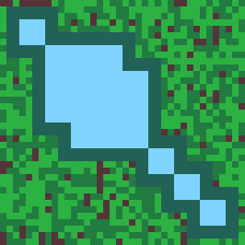


 Fountain Spirit
Fountain Spirit


{kind=link}